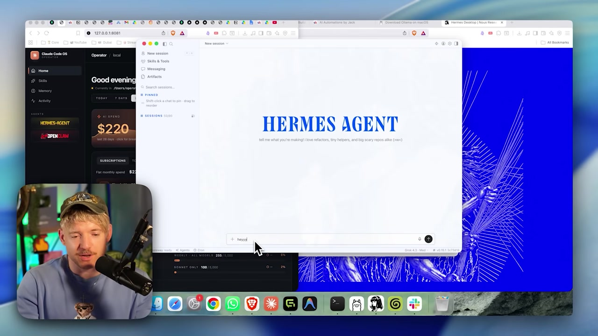

📱 Project 7: Hermes on your phone from anywhere
The last project closes the loop: your agent runs on your home computer, but you talk to it from your phone, anywhere, via Telegram — keeping the conversation private. It’s like having an assistant that lives on your machine and is available in your pocket. In the end, you’ll finish the course with a recap of the three tracks.
🎯 Goal: the agent in your pocket
The goal of this project is the reward for everything you’ve set up: accessing your Hermes Agent — which runs on your home computer with the local model — from anywhere, on your phone. The brain stays at home (private, $0 per token); you only extend its reach to your pocket. Telegram is the bridge for that.

🧭 What you’ll deliver
- •Hermes connected to Telegram as a chat channel.
- •A message sent from your phone that the agent at home responds to.
- •Confirmation that the model remains local — only the channel is remote.
New here? "Telegram" is a messaging app (like WhatsApp) that supports "bots"—automated accounts that reply to messages. Hermes uses a Telegram bot as its entry point: you message the bot, it passes your message to the agent running at home, and the response comes back through the chat.
Key concepts
The model runs on the PC; the phone is just the remote control.
Telegram is the entry point for talking to the agent.
Extend the reach without moving the intelligence.
The agent is available wherever you are, on your phone.
📲 Via Telegram: connect the channel
As you saw in 2.6, Hermes can chat via Telegram. The setup is done in the Hermes app (action in the UI): you enable the Telegram channel and link your account. From then on, messaging the bot is the same as typing in the desktop app — the difference is that the input comes from your phone.
Make sure Hermes is running at home
The desktop app needs to be open with the local model selected (bottom-right corner). It’s the one that responds.
Connect the Telegram channel (in the Hermes UI)
In Hermes connections, enable Telegram and follow the link to connect your account. (UI step—follow what the app asks; there’s no CLI flag for this.)
Send "hi" through Telegram
On your phone, open the bot conversation and send a message. If the agent responds, the channel is up.
🩺 If it doesn’t respond
Before blaming Telegram, confirm that the agent is healthy on your home machine. Use the commands you already know:
hermes status
hermes doctorObjective: see whether the agent is online and diagnose the connection. Check: hermes status shows the active agent; hermes doctor points out anything broken before you test it again on your phone.
Key concepts
The automated account that receives your message and delivers it to the agent.
UI step that connects your Telegram to your Hermes.
Check that the agent is active on your home machine.
Diagnose connection/configuration problems.
🌍 From anywhere: how the message travels
It’s worth understanding the path your message takes, because that explains why this is so practical — and where privacy comes in. You type on your phone; the message goes through Telegram to the agent that runs at home; the local model thinks and responds; the reply goes back through Telegram to your phone. The heavy lifting never leaves your machine.
The message goes from cell phone by the Telegram until the agent at home, which thinks with the local model and returns the response. The dashed rectangle is your machine: the thinking happens inside it, never in the cloud.
💡 Practical tip
Keeping the desktop app open at home (or running the background agent, from 3.5) is what keeps the channel available. If the machine sleeps or shuts down, your phone has no one to talk to. Think of the PC as your personal “server.”
Key concepts
Phone → Telegram → agent at home → local model → back.
Your home machine needs to be awake to respond.
The model only runs at home; the phone doesn’t process anything.
An open app or background agent keeps the channel running.
🔒 Keeping it private
Here's the honest beauty of this setup: the reasoning stays 100% local. The model doing the thinking is your local qwen, running on your machine — no AI company sees the content. Telegram carries the message, so treat it as the channel it is: private enough for everyday use, but not a vault. For truly sensitive information, the place is still the Vault on your own computer.
✓ What stays private
- ✓The reasoning model is yours and runs locally.
- ✓No AI provider sees the conversation.
- ✓$0 per token still applies — you’re using your hardware.
- ✓You send commands from your pocket without exposing the intelligence.
✗ What the channel DOESN'T guarantee
- ✗The message travels through Telegram — this isn’t the air-gapped Vault.
- ✗For ultra-sensitive data, use the computer in the Vault.
- ✗Anyone with access to your phone has access to the agent.
- ✗The channel is for convenience, not a vault—know the difference.
Connection to 3.6: the mode rules apply here too. Everyday question from your phone? No problem. Customer data under NDA? Handle that on your computer in Vault; don’t send it in a message. The remote channel doesn’t change the data classification—only the route it takes.
Key concepts
The model that thinks never leaves your machine.
Telegram carries the messages; the Vault on your PC is what locks them away.
Practical for everyday use; sensitive data goes in the Vault.
Whoever picks up your phone can talk to your agent.
⚙️ Considerations: network, access, and availability
Remote access brings convenience and responsibility. Three practical precautions make the difference between a setup that “just works” and one that lets you down at the worst time: keep your home machine awake, protect your phone, and check the network.
Machine awake
If your PC goes to sleep or shuts down, the agent stops responding. Adjust the power settings to prevent hibernation, or use the background agent (3.5) to keep the service running.
Protect your phone
Your phone becomes the agent’s control panel. A password/biometrics on the device and in Telegram (app lock) prevent someone else from messaging your agent.
Check the machine's network
Your home machine needs internet access to receive Telegram messages. Remember: this is the agent’s Connected mode — your phone talks to it over the network; this isn’t the air-gapped Vault.
🩺 Remote setup health routine
Every so often, run a quick check from your own computer to make sure the agent is online for your phone:
hermes status
hermes doctorObjective: confirm that the agent responds before you leave home. Check: hermes status shows "active"; if something fails, hermes doctor points out what to fix. Real commands only — everything else is a UI action.
Key concepts
Don’t let it hibernate—otherwise the agent “disappears” from your phone.
Biometrics + app lock protect access to the agent.
The remote uses Connected mode; the machine needs an internet connection.
hermes status / doctor before relying on the remote.
🏁 Result + course wrap-up
Project result: you send a message from your phone, from anywhere, and your agent—running the local model at home—replies. The brain stays private; convenience fits in your pocket. And with that, you completes the entire course. Congratulations: you’ve moved from theory to a personal, private, mobile AI operating system.
✓ How to check that it worked
- ✓A message sent from your phone gets a response from the agent.
- ✓The model that responds is the local one (lower-right corner).
- ✓Works when you’re away from home.
- ✓You know when NOT to use the channel (ultra-sensitive data).
✗ Signs that it failed
- ✗The bot doesn’t respond (machine asleep / no network).
- ✗Phone with no lock — anyone can talk through the agent.
- ✗You send NDA data in a message "because it’s convenient."
- ✗Assume the channel is as secure as the Vault.
🗺️ Recap of the three tracks
Track 1 — Fundamentals
Why local is the future, the vocabulary (LLM, agent, AI OS), Ollama and open models, context window, the privacy/performance/price trade-off, and the three modes. You now have the mental map.
Track 2 — Hands-on
You installed Ollama, chose the right model for your hardware, downloaded and chatted with your first model, created qwen3-coder-64k, connected to Hermes, and mastered the app/terminal/Telegram. You built the foundation.
Track 3 — Projects
Private chat, end-to-end Vault agent, memory/personas/skills, GitHub and documents, background agents 24/7 at $0, Vault/Connected/Cloud routing, and the agent on your phone. You set everything up to run.
🎉 Congratulations, you completed the course!
You’ve moved from a "rented cloud" to an AI OS of your own: it runs locally, costs $0 per token, works offline, respects privacy by design, and is even available on your phone. Now the philosophy that opened Track 1 is your practice — use the best tool for each task, with ownership back in your hands.
Final self-check: When you talk to Hermes on your phone via Telegram, WHERE does the model actually think?
🎯 Project (and course) summary
What now?
Return to the Track 3 index to review any project, or to the beginning of the course to revisit all three tracks. Your journey (progress, notes, and questions) is saved — open "Journey" at the top to pick up where you left off.